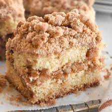

Sounds Buttermilk Pancakes
Ingredients:
- 1 1/4 cup all-purpose flour
- 2 tsp baking powder
- 1/2 tsp baking soda
- 1 tbsp sugar
- 1 egg beaten
- 1 1/2 cups buttermilk
- 2 tbsp vegetable oil
Directions:
- Combine dry ingredients in a bowl and stir well to mix.
- In another bowl combine egg, buttermilk, and oil, stir well.
- Add the dry ingredients to the wet ingredients and stir until moist (the batter will be lumpy).
- Pour about 1/4 cup of batter onto hot griddle or pan at 350 degrees.
- Turn pancakes when tops are covered with bubbles, still brown.
Cheddar and Herb Chaffle
Ingredients:
- 4 large eggs
- 2 cups finely shredded mild cheddar
- 2 scallions, thinly sliced
- 1 tsbp finely chopped fresh parsley
- kosher salt & ground black pepper
- unsalted butter, for serving
- maple syrup, for serving
Directions:
- Preheat a waffle iron to medium-high. Whisk the eggs in a large bowl until well beaten and smooth. Whisk in the Cheddar, scallions, parsley, 1/4 teaspoon salt and a few grinds of pepper.
- Coat the waffle iron with nonstick cooking spray, then ladle a heaping 1/4 cup of batter into each section. Close the lid and cook until well browned and fluffy, 4 to 5 minutes. Use a small offset spatula or tongs to transfer the chaffles to a serving plate. Repeat with the remaining batter.
- Top each chaffle with a pat of butter and drizzle with maple syrup.

Blueberry Coffee Cake Muffins
Ingredients:
- 12 tbsp (1 1/2 sticks) unsalted butter, at room temperature
- 1 1/2 cups sugar
- 3 eggs, at room temperature
- 1 1/2 tsp pure vanilla extract
- 8 oz. (about 1 cup) sour cream
- 1/4 cup milk
- 2 1/2 cups all-purpose flour
- 2 tsp baking powder
- 1/2 baking soda
- 1/2 tsp kosher salt
- 2 half-pints fresh blueberries
Directions:
- Preheat the oven to 350 degrees F. Place 16 paper liners in muffin pans.
- In the bowl of an electric mixer fitted with the paddle attachment, cream the butter and sugar until light and fluffy, about 5 minutes. With the mixer on low speed, add the eggs 1 at a time, then add the vanilla, sour cream, and milk. In a separate bowl, sift together the flour, baking powder, baking soda, and salt. With the mixer on low speed add the flour mixture to the batter and beat until just mixed. Fold in the blueberries with a spatula and be sure the batter is completely mixed.
- Scoop the batter into the prepared muffin pans, filling each cup just over the top, and bake for 25 to 30 minutes, until the muffins are lightly browned on top and a cake tester comes out clean.
Apple Streusel Coffee Cake
Ingredients:
- 1 1/2 cups all-purpose flour
- 2 1/4 tsps baking powder
- 1/2 cup sugar
- 1/2 tsp salt
- 1/2 tsp cinnamon
- 1 egg
- 1/2 cup milk
- 1/4 cup vegetable shortening, melted
- 1 1/2 cups chopped Granny Smith apples (2 to 3 apples)
Directions:
Sift flour and measure then sift together with the other dry ingredients. Beat the egg, then add the milk and melted shortening. Pour the wet into the dry then add the raw apples and mix well. Pour into a well greased 8-inch square pan. Mix together the streusel ingredients and sprinkle over the top of the batter. Bake at 400 about 25 to 30 minutes or until a toothpick inserted comes out clean. Serve the coffee cake with vanilla ice cream.
